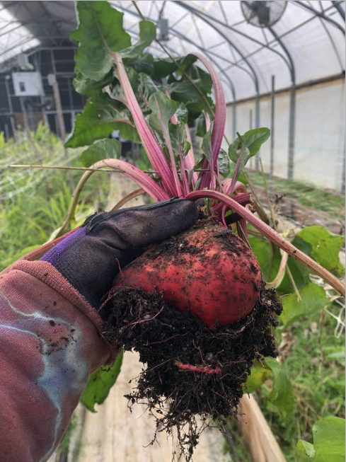

From the garden
Lately in Humboldt.




Garden care, raised beds, bee swarm relocation, and pet & plant sitting in Humboldt County, California.
I look after gardens the way I'd look after my own — with patience, real attention, and an eye for the long game. No big crews. Just me and your plot.
Weeding, pruning, deadheading, mulching, watering setup. Weekly, biweekly, or one-time visits.
From design to planting. I'll build out a productive bed that fits your space and your favorite vegetables.
Found a swarm in your yard? I'll move them safely, no kill needed, to a new home where they can thrive.
Going out of town? I'll keep the watering schedule and the cat happy while you're away.

I started Garden Faery to do the kind of work I love at the pace I love it. Slow, careful, attentive.
I work in Arcata, Bayside, McKinleyville, and Eureka. Most weeks I'm in client gardens Tuesday through Friday, with a Monday afternoon spot for regulars.
If you're looking for someone who'll show up, listen, and treat your plot like a living thing instead of a chore list, I'd love to hear from you.
Get in touchMy faery wings reach